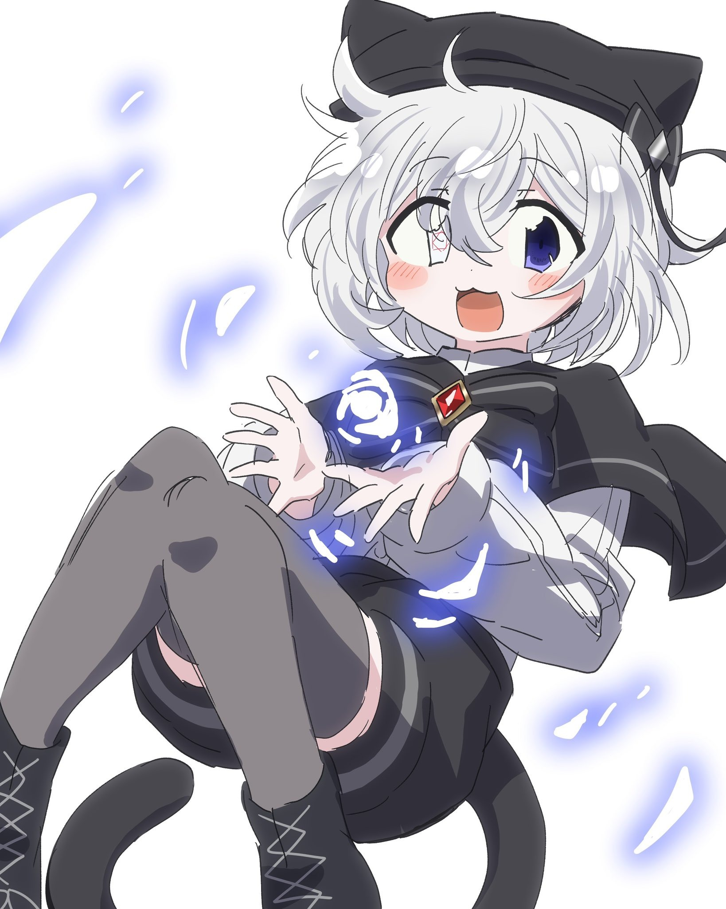

創造神ロロア
ハイテンションなぶっ飛び創造神！
代理キャラのつもりだったが、
もはや代理らしい扱いはしておらず
どちらかというと看板キャラになっている。
よく愛梨に付きまとったり、
建物を破壊したりしている。
年齢：（人間でいう）１６歳
性別：無し
血液型：無し
「ボクと遊ぼうにゃん♪」
モブ山鬼畜丸
謎多き頼れるおっさん。
変態な一面もあるが、人助けをしたりお金持ちだったり
いろいろとめっちゃすごい。海外出張に行っていることが多い。
普通に成人しているのに、
なぜか愛梨たちの同級生として扱われている。
年齢：４５歳
性別：男の子
血液型：O
「デュフフフフフフ
フフフフフフ！」
伊藤愛梨
ネットと巨乳が大好き。
陰キャ四天王のリーダー。
コミュ障陰キャの極みで愛嬌が無くガサツ。
しかし壮絶な過去を持っていて、
人の痛みにすぐ気付き放っておけない。
琥珀と付き合っている。
年齢：１２歳
性別：女の子
血液型：B
「え、快楽堕ち？」
うさぎ太郎
人懐っこくて楽観的、そして元気いっぱい！
しかし心を開いていない相手には人見知りをする。
意外にもネットが好きで、
愛梨に負けないくらいにオタク。
そして腐男子。神楽ユキという男性アイドルを激推ししている。
年齢：１２歳
性別：男の子
血液型：A
「今回こそ．．．今回こそは、
停車する時の揺れに
耐えてみせる！」
詩乃葉 瀬々莉
怖がりで気が弱く、すぐに緊張したり、泣いてしまったりする。
真面目でお人よし。
オッドアイなのがきっかけで、過去にいじめを受けていた。
うさぎ太郎と付き合っていて、2人でお出かけしたりおしゃべりしたりするのが好き。
年齢：１２歳
性別：男の子
血液型：AB
「くすぐったいですよ、
うさぎ太郎さん」
雨瀬 琥珀
穏やかで優しい性格だが、
かなりやばいヤンデレ。
とあることがきっかけで愛梨を誰よりも愛しており、毎日日記をつけている。
おしゃれで綺麗な家に住んでおり、黒猫を飼っている。
学校で一番の美少女。
年齢：１２歳
性別：女の子
血液型：O
「愛梨ちゃんを貶す人は
．．．嫌い」
伊藤恋蘭
愛梨の妹で、お姉ちゃん大好き！
そして健気でがんばり屋さん。
外で遊ぶのが大好きで、
学校では友達がたくさんいる。
年齢：１１歳
性別：女の子
血液型：B
「お姉ちゃんは、
私のヒーローだもん」
黒川 紗世
学園一の優等生。
いつも燈子やるももに振り回されているツッコミ役。
実は裏でめちゃくちゃ恥ずかしいポエムをよく書いている。
年齢：１６歳
性別：女の子
血液型：A
「別に面白さ求めて
ないから！」
桐島 燈子
紗世のクラスメイトで友達。
雰囲気だけクールだがめちゃくちゃバカで天然。
そしてワードチョイスがちょっと独特。
どこか憎めないやつ。
年齢：１６歳
性別：女の子
血液型：A
「拙者の机で
何をしているのだ」
花咲 るもも
ぶりっこで愛嬌があるが、本当はめっちゃヤバイ人。
世界征服を企んでおり、暴走させてはいけない存在。
笑顔で毒舌を吐く。
年齢：１６歳
性別：女の子
血液型：B
「紗世ちゃんが最高の屈辱を
味わっているところを、
私、嘲笑ってみたいんです！」